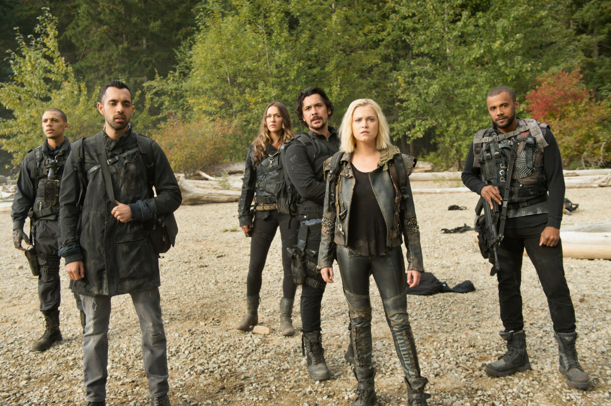
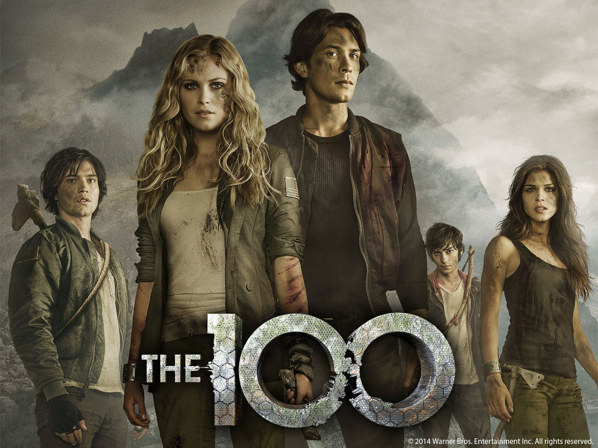
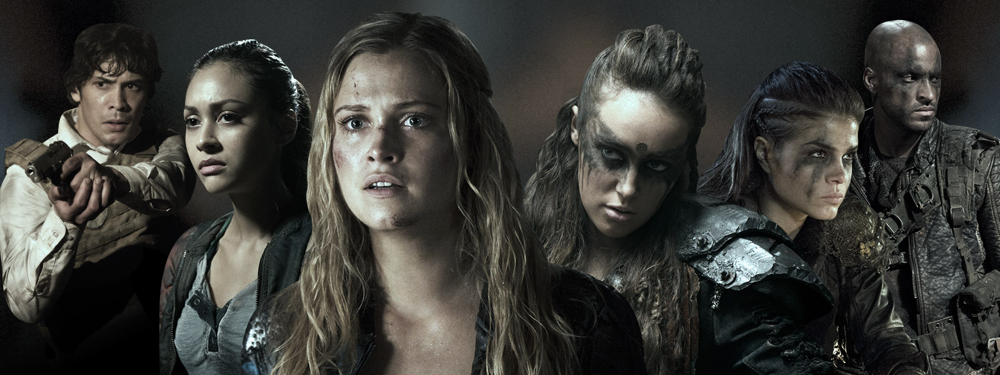

«100» или «Со́тня» (англ. The 100) — сериал по заказу американского телеканала CW, съёмки которого проходили в Ванкуверe (Канада). Сериал разработан Джейсоном Ротенбергом и основан на одноимённой серии романов американской писательницы Кэсс Морган
Спустя 97 лет после ядерного апокалипсиса считается, что на Земле никто не выжил. Единственные люди обитают на гигантской космической орбитальной станции «Ковчег». Ресурсы станции ограничены, поэтому за любой проступок совершеннолетнего наказание — смертная казнь. На Землю решено отправить сотню несовершеннолетних правонарушителей, которые проверят, насколько планета пригодна к жизни.
Сотня должна была высадиться в районе Вашингтона, около старой военной базы «Гора Везер» (англ. Mount Weather), однако корабль приземляется несколько в стороне от цели. Как оказывается, поверхность Земли вполне обитаема, но опасна. Сразу передать данные на борт станции они не смогли, так как радио при посадке вышло из строя. Сотне приходится противостоять диким племенам и мутантам, выжившим после апокалипсиса, и прорываться к цели. Руководство «Ковчега» разрабатывало операцию исхода на Землю, однако планы были нарушены восстанием и взрывом на борту. После этого части обитателей «Ковчега» удаётся спастись и приземлиться. Внутри горы Везер, в подземном бункере, выжила небольшая цивилизованная колония землян, с которой сотня устанавливает контакт.
Как выясняется, причиной ядерной войны стал вышедший из-под контроля искусственный интеллект A.L.I.E, который до сих пор активен. Главной героине Кларк Гриффин удаётся найти и вывести из строя его центральный процессор. Однако опасность остаётся, так как под управлением A.L.I.E. находились многие ядерные реакторы планеты и опасность радиационного заражения снова в силе.
  